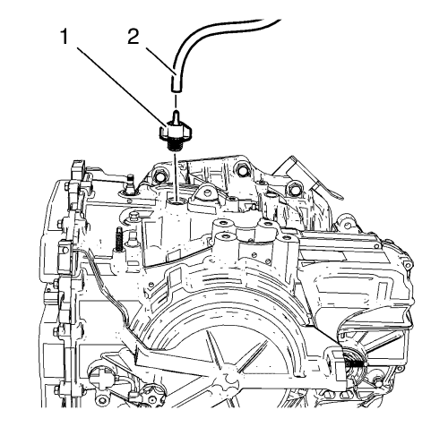

Cruze
Sustitución del aceite del cambio
Procedimiento de desmontaje
Elevar el vehículo y soportarlo de manera segura. Consultar
Elevación y soporte en alto del vehículo
.
Extraiga el tapón de drenaje del nivel del aceite (1).
Vacíe el aceite del cambio en un envase adecuado.
Precaución:
Consulte
Atención: Apriete de fijador de componente
en la sección Prólogo.
Ponga el tapón del orificio de nivel del aceite (1) y apriételo hasta
12 N·m (106 lib. pulg.)
.
Procedimiento de montaje

Bajar el vehículo.
Desmonte la bandeja de la batería. Consultar
Sustitución de la bandeja de la batería
.
Retire el tubo flexible del respiradero del cambio (2).
Retire el tapón de llenado de aceite (1).
Llene el cambio hasta el nivel adecuado con el aceite correcto. Consultar
Comprobación del nivel y el estado del aceite del cambio
y
Especificaciones de cantidad de llenado de aceite
:
6T30
→
6T40/45/50
.
Monte el tapón de llenado de aceite (1).
Monte el tubo flexible del respiradero del cambio (2).
Monte la bandeja de la batería. Consultar
Sustitución de la bandeja de la batería
.
© Copyright Chevrolet. Reservados todos los derechos